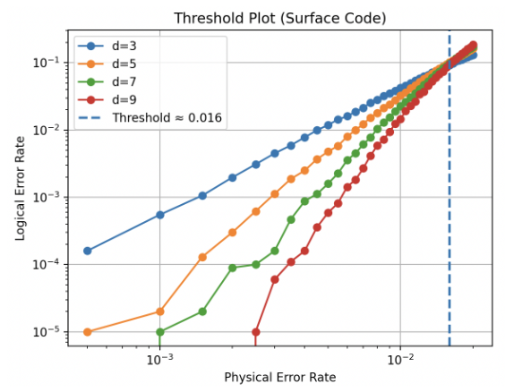

Quantum Error Correction
Surface Code Decoder Benchmarking
A research project investigating and benchmarking different quantum error correction decoders on the surface code.
The project compares decoders from several different approaches, including minimum-weight perfect matching, union-find, neural network, and tensor network methods. I developed a Python-based benchmarking framework to evaluate their correctness, logical error thresholds, decoding latency, robustness, and scalability.
View on GitHub → Download Report ↓